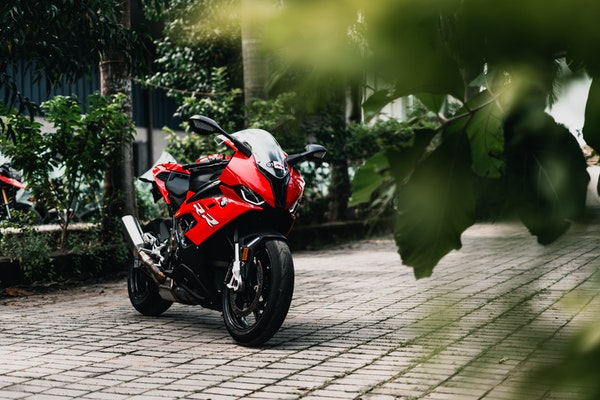

A motorcycle (or motorbike) is a vehicle used to transport people from one place to another. It does not have 4 wheels like a car. It has 2 wheels like a bicycle. But it has a motor like a car. A motorcycle is normally driven by one person. A passenger can also ride on the back of the motorcycle. Some motorcycles have a sidecar that can carry another passenger. In 1901, the first successful motorcycle was made by "Indian motorcycles" in Springfield, Massachusetts. Since then, many other companies have made them. Major manufacturers include
 home page contact